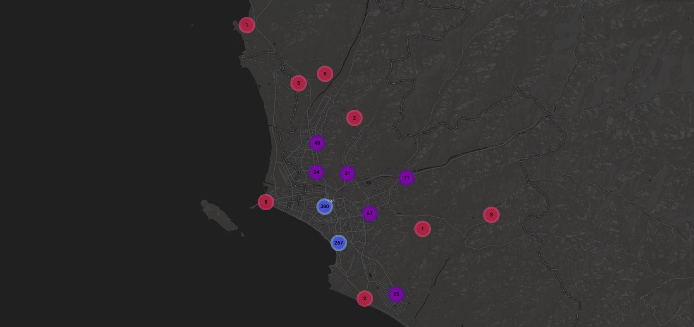
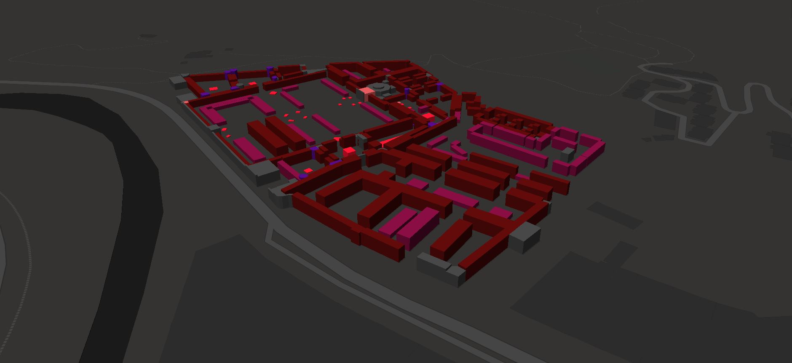
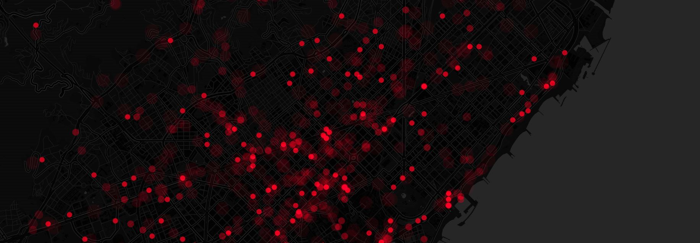
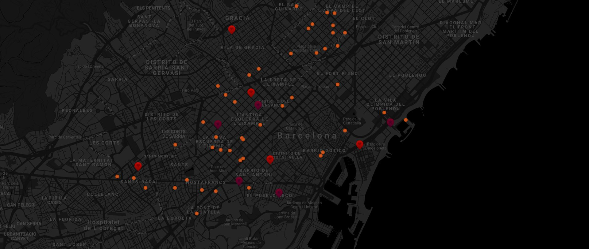

Visor SIG para explorar la distribución y concentración espacial de las actividades de la economía creativa en el área metropolitana de Alicante-Elche, España. Realizado con Leaflet y Mapbox.

Visor SIG para explorar la distribución y concentración espacial de las actividades de la economía creativa en el área metropolitana de Lima, Perú. Realizado con Leaflet y Mapbox.

Visor 3D del Cementerio de Girona, tumbas diferenciadas por color según tipo de construcción, España. Realizado con Mapbox.

Mapa animado de los accidentes de tránsito por hora en la ciudad de Barcelona, España. Realizado con Carto.

Directorio completo y mapa interactivo de los restaurantes peruanos en la ciudad de Barcelona, España. Realizado con Google Maps y Javascript.